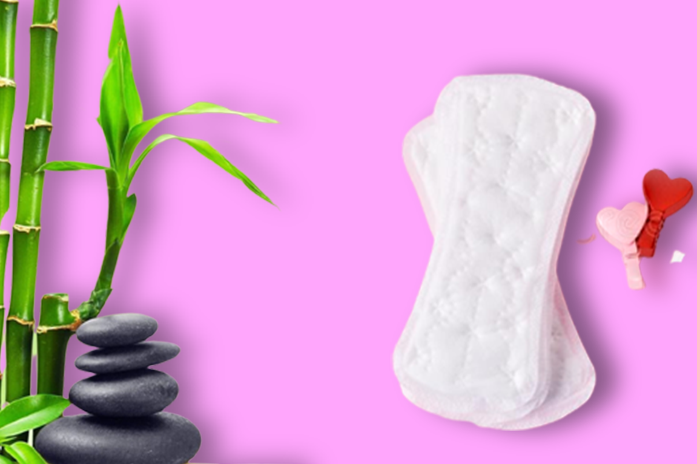

Bamboo pulp saves wood and can also be used to make compost, in addition to being 300 percent absorbent and safe.
Bamboo fibre is an ideal choice for the top layer of a sanitary pad since it is naturally antibacterial with respiration spores, non - allergenic, odour resistant, very pleasant, and environmentally friendly.

𝗛𝗼𝘄 𝗮𝗻𝗶𝗼𝗻 𝗶𝘀 𝗯𝗲𝗻𝗲𝗳𝗶𝗰𝗶𝗮𝗹 𝗳𝗼𝗿 𝘂𝘀?
Everywhere in our environment has negative ions. It is present in both water and the air. Our health and well-being benefit greatly from negative ions.
Anaerobic bacteria are to blame for the female inflammatory condition.
Plastic sanitary pads are bleached using chemicals known as dioxins, which is why chemically treated sanitary pads are often white.
By utilising an anion-embedded strip, the anaerobic bacteria and deoxins are reduced and produces high-density anions, which are beneficial for the respiratory organs.
𝗪𝗛𝗬 𝗖𝗛𝗨𝗠𝗦𝗖𝗔𝗥𝗘 𝗕𝗔𝗠𝗕𝗢𝗢 𝗔𝗡𝗜𝗢𝗡 𝗦𝗔𝗡𝗜𝗧𝗔𝗥𝗬 𝗡𝗔𝗣𝗞𝗜𝗡𝗦
When you're having your period, bamboo sanitary pads are an eco-friendly and comfortable solution. These sanitary napkins easily reduce your contribution to plastic waste because they are biodegradable.
"If you don't have wings, create them by picking the correct product”
When you're having your period, bamboo sanitary pads are an eco-friendly and comfortable solution. These sanitary napkins easily reduce your contribution to plastic waste because they are biodegradable.
It is normal for sanitary napkin companies to use ten grams of wood pulp per napkin, but chumscare replacing that with bamboo pulp, which has an antibacterial quality.
Perfect proportions between the cotton and clothing make it porous enough to function as a micro absorbent.
Chemical-infused pads should not be used by those who have hypersensitive skin or are receiving treatment for skin irritation. Biodegradable pads have an absorbent cellulose core that keeps you dry while allowing the skin to breathe, in contrast to synthetic fibre pads.
Bamboo anion pads are breathable.
𝗛𝗼𝘄 𝗶𝘁 𝗶𝘀 𝗱𝗶𝗳𝗳𝗲𝗿𝗲𝗻𝘁 𝗳𝗿𝗼𝗺 𝗼𝘁𝗵𝗲𝗿 𝗽𝗮𝗱𝘀?
The following factors makes chumscare bamboo anion napkin unique!
There are no loose ends, i.e., no leaks.
There are no irritant chemicals.
Antibacterial properties
Immediately discarded
non-allergenic
softness without sacrificing sturdiness
Economical
Use longevity to minimise frequent change, especially when travelling or working.
Various sizes, as well as non-stick adhesive wings